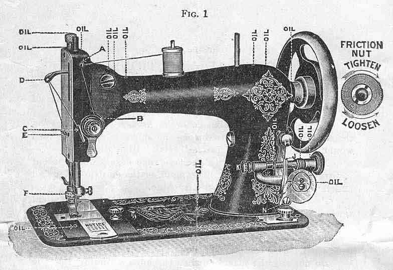
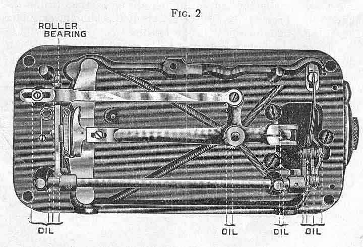
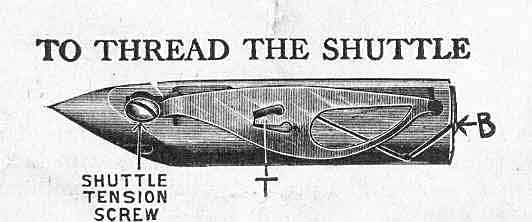
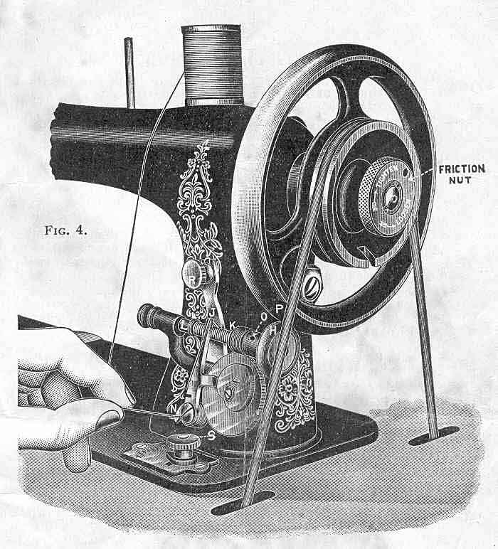

THE NEEDLEBAR
Online Manuals Section
Before the machine leaves the factory, it has been carefully inspected and adjusted, and tested with various sizes of thread, and found to work perfectly in every respect.
Never run the machine with the presser foot resting on the feed, and no cloth between, as the sharp teeth of the feed would injure the foot and the feed teeth will be dulled.
Never run the machine with the race covers open, except to turn the wheel very slowly by hand, or the shuttle will catch and cause serious injury to the machine.
Practice on strips of cloth and do not attempt practical sewing until you can guide the material and produce a regular motion.
Do not try to help the feed by pulling the work lest you bend the needle. The machine will feed without assistance.
Do not run the machine when threaded up unless there is cloth under the presser foot, or the thread will snarl and tangle, and perhaps bend or break the needle.
Do not allow lint or dust to accumulate in the shuttle or under the shuttle tension spring, as any substance inside the shuttle will prevent the proper action of the bobbin, or under the spring will interfere with the tension.
To turn a corner, stop the machine with the needle half way in the work, raise the presser foot, and turn the work, using the needle as a pivot.
When ordering needles, shuttles or parts of any kind always give the plate number of the machine stamped on the upper side of front race cover or slide directly in front of the needle.
One of the most important points in the use of a sewing machine, is keeping it thoroughly oiled, as care in oiling insures ease of motion and prevents wear. Use nothing but the best quality of oil.
Each place requiring oil is indicated by the word "oil" with dotted lines running to the point where oil must be applied. Oil holes will be found for all the bearings which cannot be reached without them.

To oil the parts inside the head: Raise the needle bar to its highest point, put one drop of oil in each of the oil holes in the bed plate and arm, as indicated.
To oil the under part of the machine: Throw off the belt, turn back the head on its hinges and apply oil at each bearing point.

The places on the stand requiring oil, are the journal of balance wheel, the bearing each end of pitman, and the bearings of the treadle on each side.
After oiling run the machine swiftly several revolutions, to distribute the oil and then wipe carefully. Be sure that every part is clean before commencing to sew.
If the machine runs hard, it is certain that some bearing is not properly oiled. If the machine is gummed from poor oil, or from long standing, use a little kerosene or benzine which will soon remove the gum. Then run the machine rapidly, wipe clean and oil thoroughly with good sewing machine oil.
(See Fig. 1)
First raise the needle bar to its highest point. Place the spool of thread on the spool pin; draw the thread through the hook "A" and down between the tension discs "B"; then up under the hook "C", up through the takeup eye "D"; then back of the staple "E" in the face plate, drawing the thread forward through the staple; then through the hook on the needle clamp "F"; then through the eye of the needle, leaving the thread about three inches long.

Hold the shuttle in the left hand, with the point toward you; drop the bobbin into the shuttle so that the thread draws from the left side of the bobbin as it is put in; then draw the thread into the open slot B toward you, at the same time putting a little pressure with your finger on the bobbin, so that it can not turn; the thread will then be forced under the point T of the shuttle spring. The shuttle is then ready of use.
The shuttle tension is tightened by means of the screw with the small screw driver - turn this screw to the right to increase and to the left to diminish the tension on the thread.
When the machine leaves the factory, the tension in the shuttle has been set right for all ordinary kinds of work and thread, and therefore needs no alteration. The bore of the shuttle should be kept clear of lint so the end of the bobbin does not project outside the shuttle.
Withdraw the front race cover and place the shuttle in the carrier with the point toward the operator; then close the slide. It is sometimes more convenient to withdraw the back race cover and put the shuttle in its place when the carrier is at the back part of the race. This is especially the case when some of the attachments are in place.
The face of the shuttle race must be kept clean and free from dirt or gum. To do this, rub occasionally with a piece of cloth having a drop of oil on. Afterwards wipe it with a dry, clean cloth. If through neglect the race has become very gummy, first clean it with a cloth saturated with kerosene, then use an oiled cloth, and a dry, clean cloth as above. The cotton waste in the oil well in shuttle race should be kept well saturated with oil. Breaking of thread and skipping of stitches are frequently caused by failing to keep the shuttle race clean.

The hand wheel friction nut has a right hand thread.
To loosen the hand wheel pulley for winding the bobbins, hold the hand wheel with the left hand, and with the right hand turn the Friction Nut to the left or toward you as indicated by the arrow on the nut preceding the word "LOOSEN". When through winding the bobbin tighten the hand wheel pulley so that the machine will operated by turning the "Friction Nut" to the right as indicated by the arrow preceding the word "TIGHTEN".
After loosening the pulley, draw the spooler whirl rubber (H) in contact with the rim of the hand wheel (P) by turning the Thumb Screw (R) to the right just far enough to cause the bobbin winder to operate.
Place one end of the bobbin in the socket of the revolving spindle (K) on the right side and the other end in the socket of the step (L) on the left. Place the end of the thread between the brass head of the bobbin and spindle socket (K) on the right side. Draw the thread through the slot (J) on the end of the distributing lever, then down under hook (N) at the lower end of the lever. Hold the thread between the thumb and forefinger as illustrated, but NOT TOO TIGHT. A minute drop of oil should be placed on the left end of the bobbin (L) and the spindle should be oiled through the oil hole (O). An evenly and smoothly wound bobbin is necessary for good work. Do not wind the bobbin too full, if so it will not revolve freely in the shuttle.
When the bobbin is wound, back the bobbin winder rubber from the hand wheel by turning the thumb screw (R) to the left and tighten the "Friction Nut" as instructed above and the machine is ready to sew.
Raise the needle bar to its highest point; hold the needle between the thumb and first finger of the left hand, pass the shank up into the groove in the needle bar as far as it will go, with the flat side toward the bar. Secure the needle firmly with the needle clamp screw.
If Linen, Silk or very coarse Cotton is to be used, the needle may be set a little lower than the directions indicate.
If the needle breaks, it is more than likely your own fault, caused by pulling the goods to or from you, or in such a manner that the needle strikes the throat plate, and is bound to break. The needle may, however, break in trying to sew extremely heavy seams when the pressure on the presser foot is not heavy enough. To create more pressure upon the goods, turn the nut on top of the presser bar to the right; to decrease the pressure, turn it to the left. A blunt or hooked point needle will cause trouble and bad work.
(See Fig. 4)
The stitch regulator indicator is on the bed plate in front of the base of arm. On the stitch regulator plate will be found a scale of numbers indicating the length of stitch or the number of stitches to the inch (from 7 to 24). To change the stitch, loosen the thumb nut (S) (Figure 4), by turning to the left and slide the point to the figure indicating the length of stitch desired. No. 7 gives the longest and No. 24 the shortest stitch. When the indicator point is placed at (O) the feed is turned entirely off and the machine will refuse to sew.
Any desired length of stitch can be obtained by setting the indicator point at or between the figures on the indicator plate.
Be sure to set the nut tight when the desired length of stitch has been obtained.